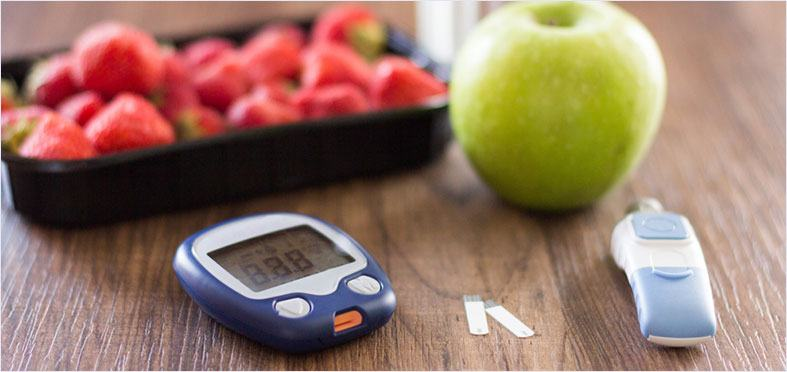

হোম স্বাস্থ্য রক্তে শর্করার মাত্রা
4 টি গোপন রহস্য রক্তে শর্করার মাত্রা কমানোর
লেখক বেলাল হোসেন ।
যাদের ডায়াবেটিস রয়েছে রক্তে শর্করার মাত্রা তাদের জন্য খুবই গুরুত্বপূর্ণ একটা বিষয়। যখন কোন ব্যক্তির রক্তে শর্করার মাত্রা প্রতি ডেসিলিটারে 180 মিলিগ্রাম (gm/dl) এর বেশি হয় তাকে রক্তে শর্করার উচ্চ মাত্রা বলে যা হাইপারগ্লাইসেমিয়া নামে পরিচিত।
আর আপনি কি জানেন যে অনিয়মিত রক্তে শর্করার মাত্রা "প্রাক-ডায়াবেটিসদের" স্বাস্থ্যের এবং জীবন মানের প্রতি বিরূপ প্রতিকৃয়া সৃষ্টি করতে পারে, এমনকি তারা জানেনই না যে তারা ডায়াবেটিস এর লক্ষণ অনুভব করছেন?
এই নিবন্ধে আমরা রক্তে শর্করার মাত্রা কমানোর শীর্ষস্থানীয় 4 টি গোপন রহস্য পর্যালোচনা করব।
রক্তে শর্করার মাত্রা নিয়ন্ত্রণ করা কেন জরুরি?
আপনার রক্তে শর্করার মাত্রা আপনার নির্ধারিত লক্ষ্যমাত্রায় রাখলে তা রক্তে শর্করার উচ্চ মাত্রা জনিত স্বাস্থ্য জটিলতাগুলো দূরে রাখতে আপনাকে সহায়তা করবে।
সময়ের সাথে সাথে, অস্বাস্থ্যকর রক্তে শর্করার মাত্রা বিভিন্ন অঙ্গ এবং তন্ত্রের ছোট এবং বড় রক্তনালিগুলোকে ক্ষতিগ্রস্থ করে যা পরবর্তীতে আরও গুরুত্বর আকার ধারন করতে পারে, যেমন: দৃষ্টি প্রতিবন্ধকতা এবং অন্ধত্ব, পায়ের আলসার, সংক্রমণ এবং অঙ্গচ্ছেদ, কিডনি নষ্ট এবং ডায়ালাইসিস, হার্ট অ্যাটাক এবং স্ট্রোক, পেরিফেরাল ভাস্কুলার সিস্টেমের রোগ এবং স্নায়ুতন্ত্রের ক্ষতি যা পরবর্তীতে ব্যথা এবং দুর্বলতার রূপ নেয়।
এই আশ্চর্যজনক পরিসংখ্যানটি দেখুন: বাংলাদেশ 90% পর্যন্ত মানুষ রক্তে শর্করার মাত্রা হ্রাস করেছে। আপনার কি স্বাভাবিকের চেয়ে বেশি ক্ষুধা লাগছে? অথবা, আপনার কি স্বাভাবিকের চেয়ে বেশি তৃষ্ণা লাগছে? আপনি কি আপনার পায়ের উপরের অংশে ব্যথা অনুভব করেন অথবা আপনি কি মনেহয় যে আপনার গোড়ালি এবং পা ফুলে গেছে? যদি তাই হয়, তাহলে আপনার রক্তে শর্করার মাত্রা বৃদ্ধির পরিণতি ভোগ করার একটি দারূণ সম্ভাবনা রয়েছে।
আপনার রক্তে শর্করার মাত্রা খাবারের আগে 100 mg/dL এবং খাবারের পরে 180 mg/dL-এর নিচে রেখে, আপনি অনিয়মিত রক্তে শর্করার মাত্রা জনিত পার্শ্বপ্রতিক্রিয়ার ঝুঁকি উল্লেখযোগ্যভাবে কমাতে পারেন।
কিভাবে রক্তে শর্করার মাত্রা কমাবেন
উচ্চ রক্তে শর্করার পরিমাণ কমাতে এবং জটিলতার ঝুঁকি কমানোর জন্য এখানে 4টি শীর্ষস্থানীয় উপায় দেওয়া আছে:
1 কার্বোহাইড্রেট খাওয়া কমান
গবেষকগন গবেষণা করে পেয়েছেন যে কম কার্বোহাইড্রেট এবং উচ্চ প্রোটিনযুক্ত খাবার খেলে রক্তে শর্করার মাত্রা কমে যায়।
শরীর কার্বোহাইড্রেটগুলোকে শর্করাতে ভেঙে দেয় যা শরীর শক্তি হিসাবে ব্যবহার করে। কিছু কার্বোহাইড্রেট খাবারে অপরিহার্য। যাইহোক, অনেকের জন্য (বিশেষ করে যাদের ডায়াবেটিস আছে), অত্যধিক কার্বোহাইড্রেট গ্রহণ করার ফলে রক্তে শর্করার মাত্রা অতিরিক্ত বেড়ে যেতে পারে।
কোন ব্যক্তির যে পরিমান কার্বোহাইড্রেট খায় তার পরিমাণ হ্রাস করলে রক্তে শর্করার দোনলিও কমে যাবে।
2 সঠিক কার্ব ভক্ষণ করুন
প্রধান দুই ধরনের কার্বোহাইড্রেট হলো সহজ ও জটিল এবং রক্তে শর্করার মাত্রাকে তারা ভিন্নভাবে প্রভাবিত করে।
সাধারণ কার্বোহাইড্রেটগুলো বেশিরভাগই তৈরি হয় এক ধরনের শর্করা দিয়ে। এগুলি সাদা রুটি, পাস্তা এবং মিষ্টি জাতীয় খাবারে পাওয়া যায়। শরীর এই কার্বোহাইড্রেটগুলিকে খুব দ্রুত শর্করায় পরিণত করে যার ফলে রক্তে শর্করার মাত্রা দ্রুত বেড়ে যায়।
কমপ্লেক্স কার্বোহাইড্রেটগুলো তিন বা ততোধিক ধরনের শর্করার সমন্বয়ে গঠিত যা একসাথে যুক্ত থাকে। এই ধরণের শর্করার মধ্যে রাসায়নিক বন্ধনগুলি জটিল হওয়ার কারণে, সেগুলো ভেঙে ফেলতে শরীরের বেশি সময়ের প্রয়োজন হয়।
ফলে, শরীরে ধীরে ধীরে সুগার নিঃসৃত হয়, অর্থাৎ খাওয়ার পর রক্তে শর্করার মাত্রা দ্রুত বাড়ে না। জটিল কার্বোহাইড্রেটের উদাহরণ হল গোটা শস্য এবং মিষ্টি আলু।
3 নিম্ন গ্লাইসেমিক সূচকযুক্ত খাবার নির্বাচন করুন
গ্লাইসেমিক ইনডেক্স বিভিন্ন খাবার কিভাবে রক্তে শর্করার বৃদ্ধি করে তার উপর ভিত্তিকরে তাদের পরিমান করে এবং বিন্যাস করে। গবেষণায় দেখা গেছে যে গ্লাইসেমিক সূচকযুক্ত ডায়েট মেনে চললে রক্তে শর্করার মাত্রা দ্রুত লাফিয়ে বেড়ে যাওয়া কমিয়ে দেয়।
নিম্ন গ্লাইসেমিক সূচকযুক্ত খাবারগুলি হল সেইগুলি যেগুলির মান 55 এর কম। নিম্ন গ্লাইসেমিক সূচকযুক্ত খাবারের উদাহরণগুলো হল: মিষ্টি আলু, কুইনো, লেগুম, কম চর্বিযুক্ত দুধ, সবুজ পাতা যুক্ত শাকসবজি, স্টার্চবিহীন শাকসবজি, বাদাম এবং বীজ , মাংস এবং মাছ.
4 নিয়মিত রক্তের শর্করা নিয়ন্ত্রক পরিপূরক গ্রহণ
রক্তে শর্করার মাত্রা বজায় রাখার জন্য সম্পূরকগুলো যেমন Dia Fix ইদানীং মিডিয়াতে প্রায়ই উল্লেখ করা হয় এবং সঙ্গত কারণে।
প্রাকৃতিক, ক্লিনিক্যালি পরীক্ষিত উপাদান থেকে তৈরি Dia Fix প্রাকৃতিক, ক্লিনিক্যালি পরীক্ষিত উপাদান থেকে তৈরি রক্তে শর্করার মাত্রা স্থিতিশীল রাখতে কার্যকরী বলে প্রমাণিত হয়েছে। পরিপূরক গ্রহণের প্রধান সুবিধাগুলির মধ্যে রয়েছে বিপাকের স্বাস্থ্যকর কার্যকারিতাকে সাহায্য করা, কার্বোহাইড্রেট ও লিপিডগুলোর একটি স্বাস্থ্যকর বিপাককে উদ্দীপিত করা এবং একটি স্বাস্থ্যকর রক্তে শর্করার মাত্রা বজায় রাখা।
একটি অতিরিক্ত বোনাস হল এটি ওজন কমাতে সাহায্য করে কারণ উচ্চ রক্তে শর্করা অতিরিক্ত ইনসুলিন নিঃসরণ করে যা শরীরকে চর্বি পোড়াতে বাধা দেয়।
তবে সবচেয়ে গুরুত্বপূর্ণ, Dia Fix সেবল করা খুবই সহজ।প্রতিবার খাবারের আগে Dia Fix-এর 1টি ক্যাপসুল খান। পণ্যটি সম্পূর্ণ প্রাকৃতিক, তাই আপনার কোন ব্যবস্থাপত্রের প্রয়োজন হবে না।
আমাকে আর কী জানতে হবে?
সংক্ষিপ্ত সংস্করণ? আপনি যদি উচ্চ রক্তে শর্করার ক্ষতিকারক প্রভাবে কষ্ট পান, তবে আপনার অবিলম্বে Dia Fix কেনা উচিত
আরও তথ্য প্রয়োজন? Dia Fix কেন এতো চমৎকার সে সম্পর্কে এখানে আরও তথ্য রয়েছে:
এটি সত্যই প্রাকৃতিক।
Dia Fix প্রাকৃতিক উপাদানের উপর ভিত্তি করে একটি সর্ব-প্রাকৃতিক প্রতিকার - গ্লুকোজ স্ট্যাবিলাইজার। । কোন ব্যবস্থাপত্রের প্রয়োজন নেই।
সাহায্য করতে প্রতিশ্রুতি বদ্ধ
Dia Fix এর রয়েছে 100% সন্তুষ্টির নিশ্চয়তা যার অর্থ আপনার কিছুই হারানোর নেই।
এটি কথায় কিনবেন?
সস্তায় নকল কেনার জন্য অনলাইনে ঝাঁপিয়ে পরেন না। আসল Dia Fix কেনার জন্য তাদের ওয়েবসাইটে যান এখনই।
আপনার টাকা নষ্ট করা বন্ধ করুন। আজই নিয়ন্ত্রণ নিন।
যদি রক্তে শর্করার উচ্চ মাত্রা আপনার হতাশার কারণ হয় এবং আপনার জীবনযাত্রার কমিয়ে দেয়, তাহলে আপনার একটি ভালো সমাধান প্রয়োজন। নিয়ন্ত্রণ নিন এবং কিনুন Dia Fix
আমাদের পাঠকদের জন্য বিশেষ ব্যবস্থা
হালনাগাদ: আর মাত্র 20 টি প্যাকেজ রয়েছে।
বিশেষ অফার শেষ হবে:

Dia Fix
সম্পর্কিত নিবন্ধসমূহ
রক্তে সুগারের মাত্রা বজায় রাখার জন্য একটি প্রাকৃতিক প্রিপারেশন
80/120 রক্তচাপ নিয়ে আরও সক্রিয় জীবন যাপন করুন।
শর্করার মাত্রা নিয়ন্ত্রণে রাখার জন্য সঠিক ডায়েট
Dia Fix
মন্তব্য
347 টি মন্তব্য
শার্মিন টপ কমেন্ট
আমার পায়ের অনুভুটি খুব ভালো লাগছে! অনেকদিন ধরে এটি আমার জন্য সত্যই বেদনাদায়ক ছিল। আমি ভুলেই গিয়েছিলাম যে আমার পাগুলো যখন স্বাস্থ্যবান ছিল তখন কেমন ছিল।
উত্তর • লাইক • পোস্টটি অনুসরণ করুন
জামান • 172 ফলোয়ার
আমি অনেক মাস ধরে রক্তে শর্করার উচ্চ মাত্রার সাথে লড়াই করছি আর আমি জানতাম যে আমি এটিকে স্বাভাবিক করার জন্য ওষুধ খাওয়ার শুরু করার পথেই ছিলাম। আমি খুব খুশি হয়েছিলাম যখন আমি নিজে থেকে এটি নিয়ন্ত্রণ করতে পেরেছিলাম।
উত্তর • লাইক • পোস্টটি অনুসরণ করুন
তামান্না 122 ফলোয়ার
আমি বাড়ি চারপাশে এবং উঠানে স্বাচ্ছন্দ্যে হাঁটতে পারি যা আমি 2 মাস আগে করতে পারিনি, কারণ আমার পায়ের অসাড়তার কারণে আমাকে প্রায় বিছানাতেই পরে থাকতে হতো।
উত্তর • লাইক • পোস্টটি অনুসরণ করুন
শার্মিন 67 ফলোয়ার
আমি এটি উষ্ণ পছন্দ করি এবং আমি এটি পছন্দ করি! দূর্বল সঞ্চালনের কারনে, আমার পা এবং হাত সারাদিন ক্রমাগত ঠান্ডা থাকতো। এবং এখন সব দূর হয়ে গেছে।
উত্তর • লাইক • পোস্টটি অনুসরণ করুন
হাসান • 49 ফলোয়ার
আমি 10 বছরের মধ্যে প্রথমবার খেললাম। আমি কখনই ভাবিনি যে আমার পা আবার খেলতে পারার মত সুস্থ হবে। সৌভাগ্যবশত, আমি ভুল ছিলাম।
উত্তর • লাইক • পোস্টটি অনুসরণ করুন
মায়শা • 38 ফলোয়ার
আমি আবার সাভাবিক বোধ করছি। আমার পাগুলো আবার সাভাবিক দেখাচ্ছে আর আমি আগের চেয়ে অনেক ভালো বোধ করছি।
উত্তর • লাইক • পোস্টটি অনুসরণ করুন